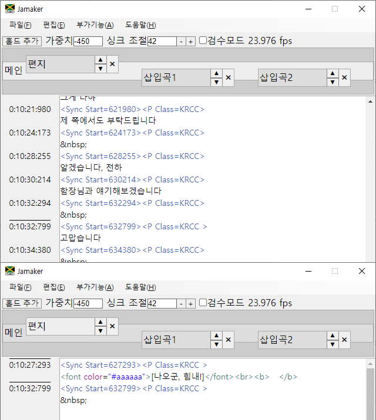
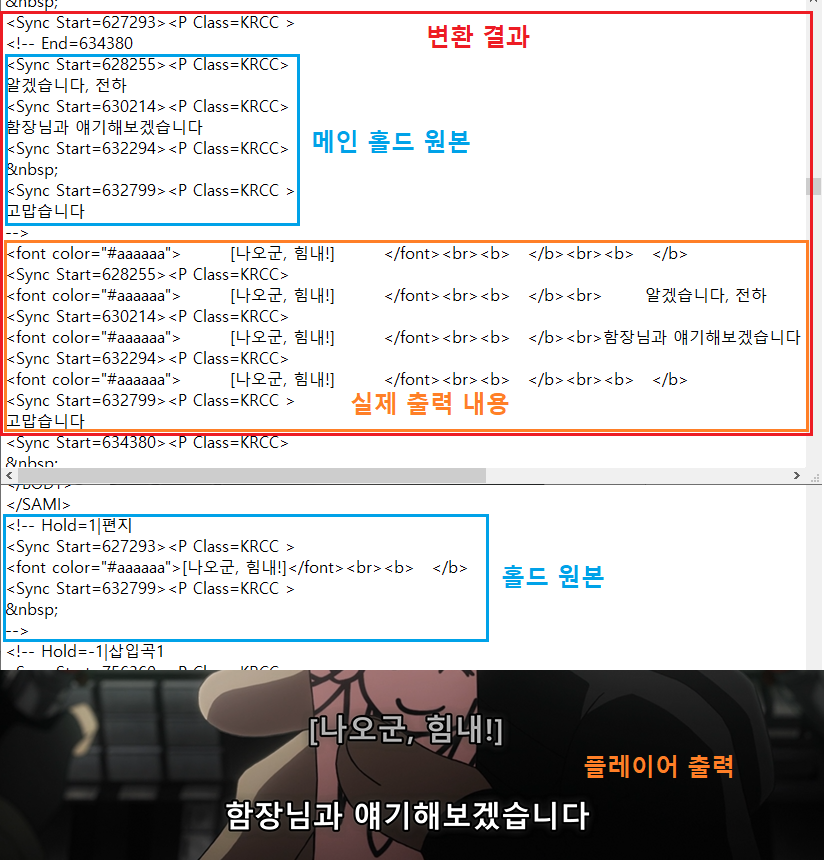

UI는 CC4의 홀드 기능과 비슷한 면이 있으나, 기능적으로 상당한 차이가 있습니다.

홀드는 별도 파일이 아닌 하나의 파일로 저장되며
기존 부가기능의 '겹치는 싱크 결합' 작업이 자동으로 이뤄집니다.
위아래로 출력 위치를 바꿀 수 있으며
이름을 더블클릭하면 수정하실 수 있습니다.

저장 시엔 최종 변환 결과와 함께, 작업 중이던 원본 형태가 주석 형태로 함께 저장되며
내보내기 기능을 사용하시면 실제 출력 내용만 남게 됩니다.(용량 감소)